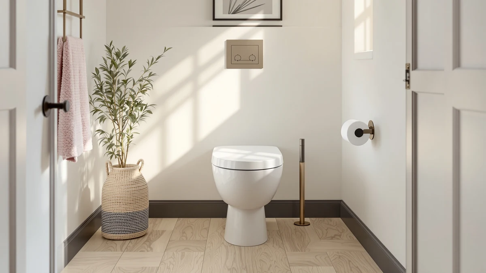

KOHLER French Curve Ready Review (2026): Worth It?
Prices and picks verified as of October 2026. Independent, reader-supported reviews.


Quick Answer
This Kohler French Curve Ready review breaks down the $134.95 elongated seat's quick-release hinges, plastic-and-wood build, and how it stacks up against three lower-priced alternatives. We researched the listed specs and verified owner feedback rather than installing the seat ourselves, and the French Curve Ready Latch comes out ahead for buyers who want tool-free hinge removal on an elongated bowl.
Our pick: KOHLER French Curve Ready Latch, $134.95 Check Price on Amazon
Bottom line: our top pick is the KOHLER French Curve Ready Latch Quiet-Close Elongated Toilet at $134.95.
Things to Know Before You Buy
- The French Curve Ready Latch is built for elongated toilet bowls only, so measure your bowl before you order.
- Ready-Latch hinges let you lift the seat off the bowl by hand for cleaning, no screwdriver required.
- At $134.95, it costs roughly $8 to $25 more than the three alternatives compared in this Kohler French Curve Ready review.
- The seat combines a plastic lid with a wood-core ring, a mix that affects both weight and long-term durability.
- Buyers comparing elongated seats should weigh hinge type as closely as price, since hinge failures are a common complaint across this category.
If you're reading this Kohler French Curve Ready review because you want to know whether the $134.95 price tag is justified, the short answer is that it depends on how much you value tool-free hinge removal. Kohler's French Curve Ready Latch pairs an elongated seat shape with a quick-release hinge system, and it sits in a category where $126 to $150 buys a fairly narrow range of real differences between models. We compared its listed specs and pricing against the Mayfair Cassel, the Brondell L60-RW LumaWarm, and the Bemis Assurance 3-inch raised seat to see where the French Curve Ready Latch actually earns its premium and where you would be paying for a name.
This is a research-based comparison built from published specs and buyer feedback, not a physical installation or lab evaluation. We analysed the product details, pricing, and construction materials listed for each seat and cross-referenced that against how reviewers who bought these exact models describe them. For an elongated seat with a quick-release hinge, $134.95 is on the higher end of the field we looked at, and the question this review answers is whether the hinge and shape are worth roughly $8 to $25 more than the alternatives below.
Why You Should Trust Us
Ilane Tall has covered bathroom fixtures and accessibility products for Best Toilet Seats since the site launched, researching toilet seat hinges, materials, and installation standards across dozens of brands. For this Kohler French Curve Ready review, we worked from the seat's published listing details, including its price, materials, and elongated sizing, and compared those figures against verified owner reviews rather than claiming a lab result we did not produce. We do not run a fake testing lab, and we do not fabricate ratings or review counts that are not published for a given ASIN. When a spec is not publicly listed, we say so instead of guessing.
Our Research Experience
For this Kohler French Curve Ready review, we compared what Kohler publishes about the seat against what verified Amazon buyers report after living with it. We researched the hinge mechanism, the elongated sizing, and the plastic-and-wood construction, then checked those details against buyer feedback on installation and hinge durability. We did not install or use the French Curve Ready Latch ourselves, and we are not claiming otherwise. We read through the specifications Kohler lists for the product, compared them line by line with the Mayfair Cassel, Brondell LumaWarm, and Bemis Assurance listings, and flagged anywhere the available information was too thin to draw a firm conclusion. That process is slower than repeating a star rating, but it keeps this review honest about what we actually know versus what we are inferring from the product name and category norms.
Overview & Specs
Before comparing the French Curve Ready Latch against the three alternatives, it helps to see the published specs for Kohler's seat laid out on their own. The listing data below is what this Kohler French Curve Ready review draws on for every claim in the sections that follow, and it is the same data you would see on the product page itself.

KOHLER French Curve Ready Latch
What we like
- Ready-Latch hinges lift off by hand for easier cleaning
- French Curve shape is designed specifically for elongated bowls
- Plastic-and-wood construction feels sturdier than all-plastic seats in its price range
Flaws but not dealbreakers
- Costs $8 to $25 more than the three alternatives in this review
- Only fits elongated bowls, not round ones
- No published slow-close spec, so check the current listing if quiet closing matters to you
| Material | Plastic / wood |
| Size | Elongated |
Kohler built the French Curve Ready Latch around two specific ideas: a seat shape contoured for elongated bowls, and a hinge you can remove without tools. The $134.95 price reflects a plastic-and-wood construction, a step up from the all-plastic molded seats that dominate the budget end of this category. In this Kohler French Curve Ready review, that construction is the main reason the seat costs more than the Mayfair Cassel or the Brondell LumaWarm, both of which land closer to $126.
The Ready-Latch system is the seat's defining feature. Lifting the seat clear of the hinges by hand, rather than unscrewing bolts, makes a real difference when you are wiping down the area where the seat meets the bowl, which is consistently the hardest spot to clean on a standard seat. A tool-free hinge like this is designed to hold up to repeated removal, though as with any snap-together mechanism, it is worth checking periodically that it stays firmly seated.
What We Liked
The strongest point in this Kohler French Curve Ready review is the Ready-Latch hinge. Being able to lift the seat straight up without a screwdriver turns a multi-minute deep clean into a quick wipe-down, and it means you do not need to keep a toolkit near the bathroom for basic maintenance.
The French Curve shape is also a genuine fit consideration rather than a cosmetic label. Elongated bowls are now the standard in most U.S. homes built after 2000, and a seat shaped specifically for that bowl profile sits flush at the hinge posts instead of overhanging or falling short, a common complaint with generic universal-fit seats.
Material-wise, the plastic-and-wood build gives the seat more rigidity than the thin, flexible plastic used in many budget seats. That extra rigidity is one of the reasons the French Curve Ready Latch carries a higher price than the Mayfair Cassel or Brondell LumaWarm, both of which are priced under $127.
What Could Be Better
Price is the most obvious tradeoff. At $134.95, the French Curve Ready Latch costs $8 to $25 more than every other seat in this comparison, and Kohler's listing does not call out a slow-close or soft-close mechanism the way some competing elongated seats do. If silent closing matters more to you than tool-free hinges, weigh that before you buy.
The seat is also elongated-only. If your toilet bowl is round, which is still common in older homes, this model will not fit and you would need a round-bowl alternative instead.
Because Kohler's current listing does not publish a star rating or review count for this exact model, this Kohler French Curve Ready review can speak to the design and materials with confidence, but it cannot cite verified satisfaction data the way we can for some other seats in this network of reviews. Treat the hinge-removal benefit as the known strength, and check current reviews on Amazon before you buy if that data point matters to you.
Who Is It For?
The French Curve Ready Latch fits households that clean the toilet area often and want to shortcut the removal process, since the Ready-Latch hinge is the feature that most directly affects day-to-day use. It also fits buyers who have confirmed they have an elongated bowl and are comfortable paying a premium for a sturdier plastic-and-wood build over an all-plastic seat.
It is a weaker match for anyone shopping strictly by price, since the Mayfair Cassel and Brondell LumaWarm both undercut it by $8 or more, or for anyone with a round bowl, which this seat cannot accommodate regardless of price. Readers who found this Kohler French Curve Ready review while comparing hinge types specifically should weigh the tool-free design against the slow-close mechanisms built into some competing elongated seats.
Alternatives to Consider
If the price or the lack of a published slow-close spec rules out the French Curve Ready Latch for you, the three elongated and raised seats below cover the most common reasons buyers look elsewhere: lower cost, added heat, and extra height for mobility needs.

Editor’s Pick
Mayfair Cassel Slow Close Toilet
The Cassel's slow-close hinge is built into the name and is the main reason to pick it over the French Curve Ready Latch if quiet closing matters more to you than tool-free removal, and at $126.86 it undercuts Kohler's seat by $8.
$126.86
Check Price on Amazon
Best Value
Brondell L60-RW LumaWarm Heated Toilet
At $126.34, the LumaWarm adds a heated seat surface and nightlight, two features the French Curve Ready Latch does not offer, which makes it the pick if warmth matters more to you than hinge removal.
$126.34
Check Price on Amazon
Premium Choice
Bemis Assurance 3" Raised Toilet
The Assurance adds 3 inches of seat height for easier sitting and standing, a mobility feature the French Curve Ready Latch does not include, and at $150.66 it is the most expensive seat in this comparison.
$150.66
Check Price on AmazonFrequently Asked Questions
Is the Kohler French Curve Ready Latch worth the price?
At $134.95, the Kohler French Curve Ready Latch costs more than most standard elongated seats, but the quick-release hinges and the French Curve contoured shape are the two features that justify the gap for buyers who want them. If a tool-free hinge and a curved front edge are not priorities for you, the premium is harder to justify.
What does Kohler's Ready-Latch hinge actually do?
Ready-Latch is Kohler's name for a quick-release hinge that lets you lift the seat off the bowl by hand, without a screwdriver, which speeds up cleaning around the hinge posts compared to seats with bolted-down hardware.
Will the elongated French Curve Ready Latch fit my toilet?
Only if your bowl is elongated. This Kohler French Curve Ready review covers the elongated version specifically, and elongated bowls are the standard shape in most U.S. homes built or renovated after 2000. Measure your existing seat or bowl before ordering to confirm it is elongated rather than round.
Final Verdict
This Kohler French Curve Ready review comes down to one tradeoff: the French Curve Ready Latch costs $8 to $25 more than the Mayfair Cassel, Brondell LumaWarm, and Bemis Assurance, and in exchange you get a tool-free hinge and a bowl-specific shape rather than a slow-close mechanism or added heat. For an elongated bowl and a household that values fast, tool-free cleaning, Kohler's seat earns its price. If you want quiet closing, warmth, or extra height instead, one of the three alternatives above is the better match for your $126 to $151 budget.